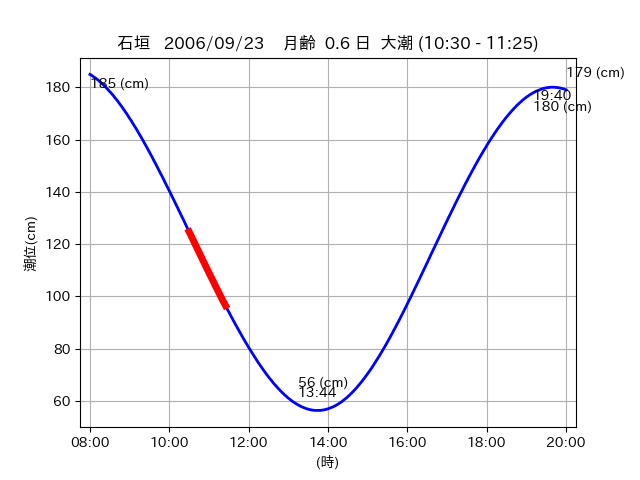
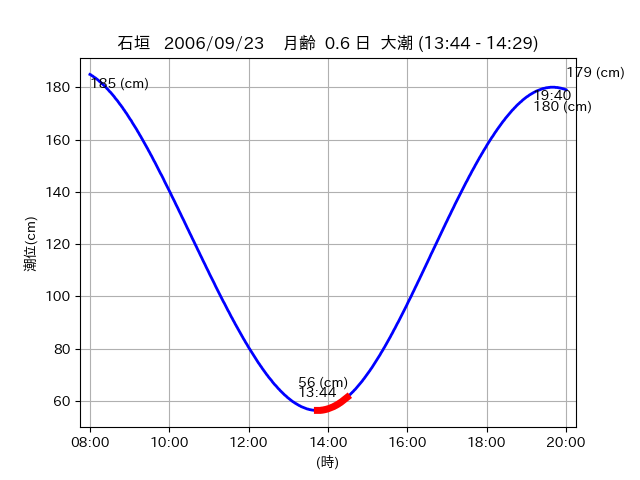

<!DOCTYPE html>
<html>
<head>
    
    <meta http-equiv="content-type" content="text/html; charset=UTF-8" />
    
        <script>
            L_NO_TOUCH = false;
            L_DISABLE_3D = false;
        </script>
    
    <style>html, body {width: 100%;height: 100%;margin: 0;padding: 0;}</style>
    <style>#map {position:absolute;top:0;bottom:0;right:0;left:0;}</style>
    <script src="https://cdn.jsdelivr.net/npm/leaflet@1.9.3/dist/leaflet.js"></script>
    <script src="https://code.jquery.com/jquery-3.7.1.min.js"></script>
    <script src="https://cdn.jsdelivr.net/npm/bootstrap@5.2.2/dist/js/bootstrap.bundle.min.js"></script>
    <script src="https://cdnjs.cloudflare.com/ajax/libs/Leaflet.awesome-markers/2.0.2/leaflet.awesome-markers.js"></script>
    <link rel="stylesheet" href="https://cdn.jsdelivr.net/npm/leaflet@1.9.3/dist/leaflet.css"/>
    <link rel="stylesheet" href="https://cdn.jsdelivr.net/npm/bootstrap@5.2.2/dist/css/bootstrap.min.css"/>
    <link rel="stylesheet" href="https://netdna.bootstrapcdn.com/bootstrap/3.0.0/css/bootstrap-glyphicons.css"/>
    <link rel="stylesheet" href="https://cdn.jsdelivr.net/npm/@fortawesome/fontawesome-free@6.2.0/css/all.min.css"/>
    <link rel="stylesheet" href="https://cdnjs.cloudflare.com/ajax/libs/Leaflet.awesome-markers/2.0.2/leaflet.awesome-markers.css"/>
    <link rel="stylesheet" href="https://cdn.jsdelivr.net/gh/python-visualization/folium/folium/templates/leaflet.awesome.rotate.min.css"/>
    
            <meta name="viewport" content="width=device-width,
                initial-scale=1.0, maximum-scale=1.0, user-scalable=no" />
            <style>
                #map_b2b2765cfbd1de214b066891579b19f1 {
                    position: relative;
                    width: 2048.0px;
                    height: 1600.0px;
                    left: 0.0%;
                    top: 0.0%;
                }
                .leaflet-container { font-size: 1rem; }
            </style>
        
</head>
<body>
    
    
            <div class="folium-map" id="map_b2b2765cfbd1de214b066891579b19f1" ></div>
        
</body>
<script>
    
    
            var map_b2b2765cfbd1de214b066891579b19f1 = L.map(
                "map_b2b2765cfbd1de214b066891579b19f1",
                {
                    center: [24.465, 123.8],
                    crs: L.CRS.EPSG3857,
                    ...{
  "zoom": 12,
  "zoomControl": true,
  "preferCanvas": false,
}

                }
            );

            

        
    
            var tile_layer_fcf6aabad449b5da91dabf2e2a0f1899 = L.tileLayer(
                "https://cyberjapandata.gsi.go.jp/xyz/seamlessphoto/{z}/{x}/{y}.jpg",
                {
  "minZoom": 0,
  "maxZoom": 18,
  "maxNativeZoom": 18,
  "noWrap": false,
  "attribution": "\u5730\u7406\u9662\u5730\u56f3",
  "subdomains": "abc",
  "detectRetina": false,
  "tms": false,
  "opacity": 1,
}

            );
        
    
            tile_layer_fcf6aabad449b5da91dabf2e2a0f1899.addTo(map_b2b2765cfbd1de214b066891579b19f1);
        
    
            var marker_dc066872f59095b13760f756eb0e74a5 = L.marker(
                [24.4575, 123.8433],
                {
}
            ).addTo(map_b2b2765cfbd1de214b066891579b19f1);
        
    
            var icon_c84c6546c90738af76e73ef668b99c63 = L.AwesomeMarkers.icon(
                {
  "markerColor": "blue",
  "iconColor": "white",
  "icon": "info-sign",
  "prefix": "glyphicon",
  "extraClasses": "fa-rotate-0",
}
            );
        
    
        var popup_651e188e0afc03c851be1ac8788c552e = L.popup({
  "maxWidth": "100%",
});

        
            
                var html_f61c0983acd2d6cd7effded45372d1b6 = $(`<div id="html_f61c0983acd2d6cd7effded45372d1b6" style="width: 100.0%; height: 100.0%;"><table><tr><td></td></tr><tr><td><center>20060923 No.1 </center></table></td></tr></table</div>`)[0];
                popup_651e188e0afc03c851be1ac8788c552e.setContent(html_f61c0983acd2d6cd7effded45372d1b6);
            
        

        marker_dc066872f59095b13760f756eb0e74a5.bindPopup(popup_651e188e0afc03c851be1ac8788c552e)
        ;

        
    
    
                marker_dc066872f59095b13760f756eb0e74a5.setIcon(icon_c84c6546c90738af76e73ef668b99c63);
            
    
            var marker_22cb102f76a5f91bebcac6c6ce3ce66b = L.marker(
                [24.4646, 123.7998],
                {
}
            ).addTo(map_b2b2765cfbd1de214b066891579b19f1);
        
    
            var icon_f376a6a0d2a8e7bb797ea817711810ee = L.AwesomeMarkers.icon(
                {
  "markerColor": "blue",
  "iconColor": "white",
  "icon": "info-sign",
  "prefix": "glyphicon",
  "extraClasses": "fa-rotate-0",
}
            );
        
    
        var popup_1d696e08de41861f7940e25d24d67ddb = L.popup({
  "maxWidth": "100%",
});

        
            
                var html_d37dbfa12d12136f547f98b996d84c2e = $(`<div id="html_d37dbfa12d12136f547f98b996d84c2e" style="width: 100.0%; height: 100.0%;"><table><tr><td></td></tr><tr><td><center>20060923 No.2 </center></table></td></tr></table</div>`)[0];
                popup_1d696e08de41861f7940e25d24d67ddb.setContent(html_d37dbfa12d12136f547f98b996d84c2e);
            
        

        marker_22cb102f76a5f91bebcac6c6ce3ce66b.bindPopup(popup_1d696e08de41861f7940e25d24d67ddb)
        ;

        
    
    
                marker_22cb102f76a5f91bebcac6c6ce3ce66b.setIcon(icon_f376a6a0d2a8e7bb797ea817711810ee);
            
</script>
</html>